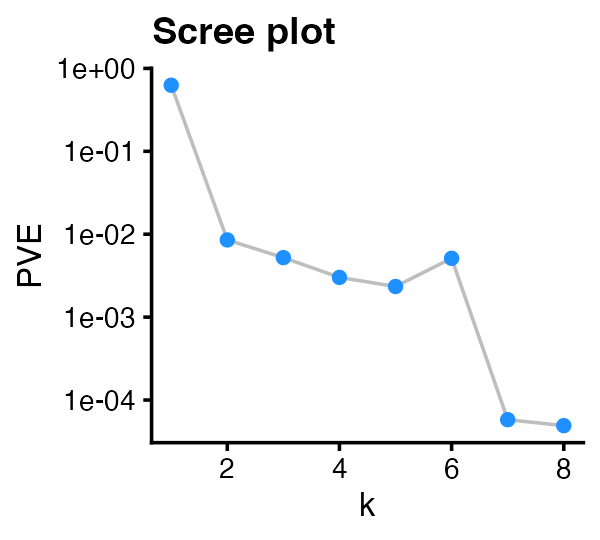
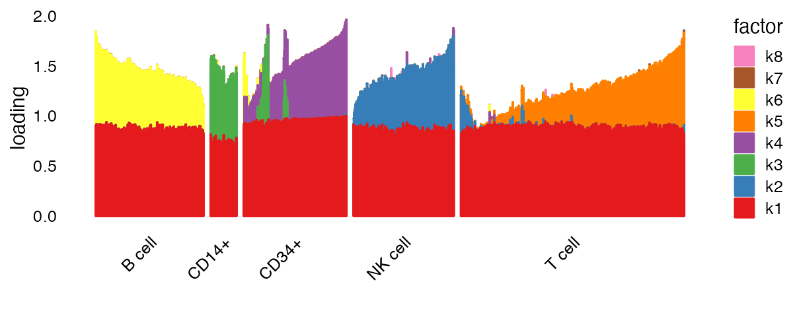
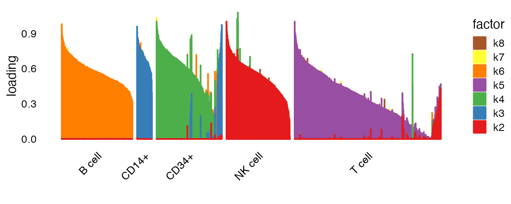
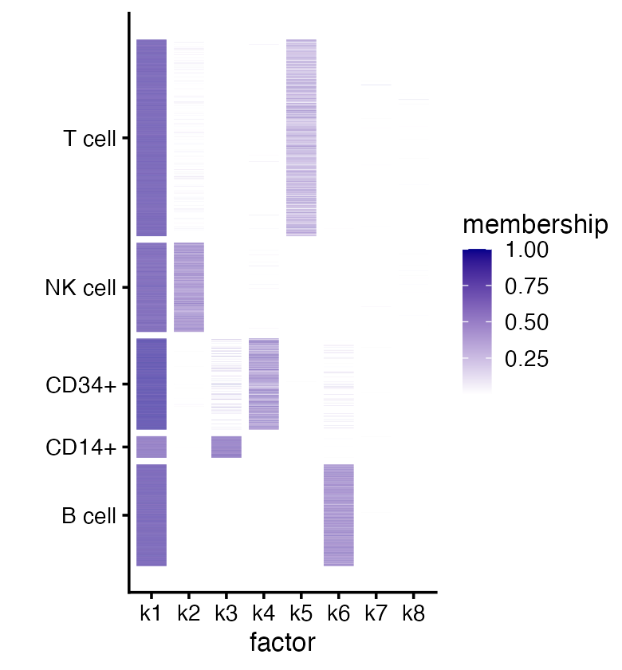
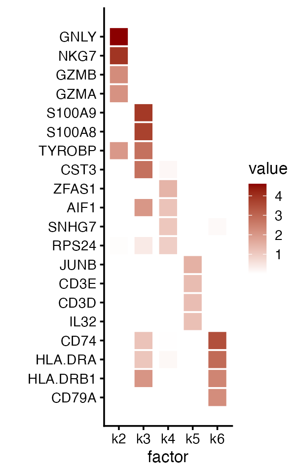
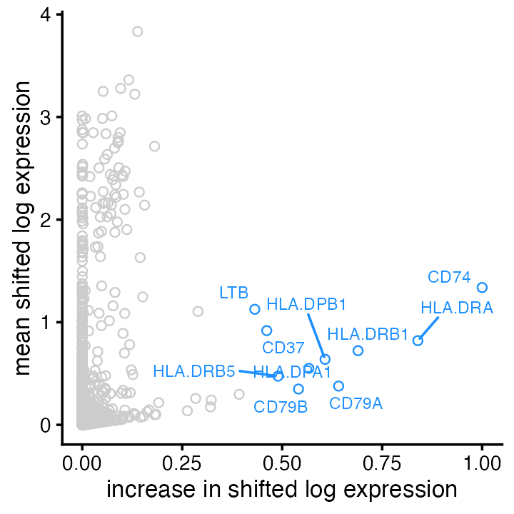

Empirical Bayes non-negative matrix factorization for single-cell RNA-seq data
Source:vignettes/flashier_single_cell.Rmd
flashier_single_cell.RmdThe aim of this vignette is show how flashier can be
used to perform a non-negative matrix factorization (NMF) analysis of
single-cell RNA-seq data. This vignette is modeled after the fastTopics
vignette on analyzing single-cell data.
We begin by loading the required packages. We also set the seed so that results can be fully reproduced.
Preparing the single-cell data for flashier
The single-cell RNA-seq data (we use the pbmc_facs data
from the fastTopics package) are unique molecular
identifier (UMI) counts stored as an \(n
\times p\) sparse matrix, where \(n\) is the number of cells and \(p\) is the number of genes:
data("pbmc_facs")
counts <- pbmc_facs$counts
colnames(counts) <- make.names(pbmc_facs$genes$symbol, unique = TRUE)
dim(counts)
#> [1] 3774 16791(Note that other R packages, for example Seurat, use the convention that rows are genes and columns are cells.)
Since the flashier model, like other linear-model-based
methods (e.g., principal components analysis), was not designed for
count data, it is recommended to first transform the data in a way that
makes them more suitable. A widely-used approach is to divide the counts
by a “size factor,” add a “pseudocount,” then take the log. We call this
transformation the “shifted logarithm,” following this paper, and we
refer to the transformed counts as “shifted log counts”.
In practice, the shifted log counts are computed as follows: we first divide the counts by \(\alpha s_i\), where \(s_i\) is the size factor for cell \(i\), and \(\alpha\) is the pseudocount. Done this way, the shifted log counts maintain sparsity in the data; that is, if the original count is zero, then the shifted log count is also zero.
More formally, the transformed counts \(y_{ij}\) obtained from the original counts \(x_{ij}\) are \[ y_{ij} = \log\bigg(1 + \frac{x_{ij}}{\alpha s_i}\bigg). \] In our analysis below, we use library-size normalization; that is, we set \[ s_i = \frac{\text{total count for cell} \; i} {\text{average across all cells}} = \frac{\sum_{j=1}^p x_{ij}} {\frac{1}{n}\sum_{i=1}^n \sum_{j=1}^p x_{ij}}, \] and we set the pseudocount \(\alpha\) to 1.
a <- 1
size_factors <- rowSums(counts)
size_factors <- size_factors / mean(size_factors)
shifted_log_counts <- log1p(counts / (a * size_factors))Note that, since the counts are sparse, we could have performed this
transformation more efficiently using, for example, the
mapSparse function from the MatrixExtra
package.
Variance regularization
Before we fit the model, one issue we need to confront is that
flashier may automatically estimate the variances to be too
small, which can especially be an issue for genes with low expression.
We can avoid this issue by setting a sensible lower bound on the
variance estimates.
We use the following rule of thumb: estimate the standard deviation of the transformed data for a Poisson random variable with rate \(\mu = 1 / n\), where \(n\) is the number of samples. This standard deviation corresponds to a gene for which we would expect to observe a single count across all \(n\) cells, so it can serve as a reasonable lower bound to prevent variance estimates from getting too small.
Fit a flashier model
Now we can call flash to fit an NMF model to the transformed data:
fit <- flash(shifted_log_counts,
ebnm_fn = ebnm_point_exponential,
var_type = 2,
greedy_Kmax = 8,
S = s1,
backfit = FALSE)
#> Adding factor 1 to flash object...
#> Adding factor 2 to flash object...
#> Adding factor 3 to flash object...
#> Adding factor 4 to flash object...
#> Adding factor 5 to flash object...
#> Adding factor 6 to flash object...
#> Adding factor 7 to flash object...
#> Adding factor 8 to flash object...
#> Wrapping up...
#> Done.
#> Nullchecking 8 factors...
#> Done.A few notes about this flash call:
ebnm_fn = ebnm_point_exponentialforces both the \({\bf L}\) and \({\bf F}\) matrices in flashier to be non-negative, so this call will generate a non-negative matrix factorization of the (transformed) counts matrix. Other types of matrix factorizations can be produced with different choices of theebnm_fnargument; this is explained in detail in the Introduction to flashier vignette. See also the notes at the bottom of this vignette.var_type = 2means that we estimate column-wise (here, gene-wise) variances; that is, we estimate a different variance for each column (gene).greedy_Kmax = 8forces flashier to fit no more than 8 factors. In practice we recommend using a larger value, but to keep the example simple and short we set it to 8 here.backfit = FALSEskips the backfitting step. Backfitting can often greatly improve the fit, and is generally recommended for better results. (And indeed, backfitting noticeably improves the fit for these data.) On the other hand, backfitting can sometimes take a long time to complete, so have omitted the backfitting step here to reduce the computational effort involved.
The plot method with default settings produces a “scree
plot” showing the proportion of variance explained by each of the 8
factors:
plot(fit)
Factors 7 and 8 explain a very small proportion of variation (and probably offer little insight into the biology of these cells).
Visualizing the cell matrix
In this matrix factorization, the rows of the \({\bf L}\) matrix contains the estimated “membership levels,” or “memberships,” for each cell. For example:
cell_ids <- c("GATATATGTCAGTG-1-b_cells",
"GACAGTACCTGTGA-1-memory_t",
"TGAAGCACACAGCT-1-b_cells")
round(fit$L_pm[cell_ids, ], digits = 3)
#> [,1] [,2] [,3] [,4] [,5] [,6] [,7] [,8]
#> GATATATGTCAGTG-1-b_cells 0.562 0 0 0 0.001 0.487 0 0
#> GACAGTACCTGTGA-1-memory_t 0.636 0 0 0 0.247 0.000 0 0
#> TGAAGCACACAGCT-1-b_cells 0.617 0 0 0 0.000 0.211 0 0The first and third cells mainly have membership in factors 1 and 6, whereas the second cell mostly has membership in factors 1 and 5. Most of the memberships are zero.
We can use plotting functions provided by flashier to
visualize the relationship between the memberships and the cell labels,
and possibly get some clues about the biological meaning of the factors.
The cell labels are the “sorted” cell subpopulations:
summary(pbmc_facs$samples$subpop)
#> B cell CD14+ CD34+ NK cell T cell
#> 767 163 687 673 1484We can produce different types of plots by specifying the
plot_type argument to the plot method. For
example, plotting overlapping histograms makes it immediately clear that
each component 2 through 6 is primarily capturing a single cell
type.
plot(fit,
plot_type = "histogram",
pm_which = "loadings",
pm_groups = pbmc_facs$samples$subpop,
bins = 20)
Other plot types can capture more subtle structure. An especially useful plot type for visualizing nonnegative factorizations is the “structure plot” — a stacked bar plot in which each component is represented as a bar of a different color, and the bar heights are given by the loadings on each component.
plot(fit,
plot_type = "structure",
pm_which = "loadings",
pm_groups = pbmc_facs$samples$subpop,
gap = 25)
Factor 1 (“k1” in the legend) is present in all cell types, and is likely capturing a “baseline” level of expression throughout. To focus on differences between cell types, let’s remove this first factor from our structure plot:
plot(fit,
plot_type = "structure",
kset = 2:8,
pm_which = "loadings",
pm_groups = pbmc_facs$samples$subpop,
gap = 25)
It is clear from this plot that factors 2 through 6 (“k2” through “k6” in the legend) are capturing, respectively, natural killer (NK) cells, CD14+ cells, CD34+ cells, T cells and B cells. There is also more subtle structure captured by the memberships, such as the subset of T cells with mixed memberships (factors 2 and 5) which suggests a subpopulation that is intermediate between “pure” T and “pure” NK cells. It is also interesting to note the subset of CD34+ cells that are primarily loaded on factor 3; some of these cells may be mislabeled.
We can also visualize the cell matrix in a heatmap:
plot(fit,
plot_type = "heatmap",
pm_which = "loadings",
pm_groups = pbmc_facs$samples$subpop,
gap = 25)
Visualizing the gene matrix
Above, we used the provided cell labels to interpret five of the factors as capturing distinct cell types (B cells, T cells, etc). However, one might not always have cell labels, or the existing cell labels may not be informative for the factors. We can also look to the \({\bf F}\) matrix—the “gene matrix”—for interpreting the factors.
The gene matrix contains estimates of gene expression changes. Because these estimates are based on the shifted log counts, more precisely they are changes in the shifted log-expression. The first factor captures a “baseline” level of expression, so, broadly speaking, we interpret these changes relative to this baseline.
Genes that were estimated to have the largest increases in expression might give the most helpful clues about the underlying biology. For example, many of the genes with the largest expression increases in factor 6 are also genes characteristic of B cells:
res <- ldf(fit, type = "i")
F <- with(res, F %*% diag(D))
rownames(F) <- pbmc_facs$genes$symbol
head(sort(F[,6], decreasing = TRUE), n = 16)
#> CD74 HLA-DRA HLA-DRB1 CD79A HLA-DPB1 HLA-DPA1 CD79B HLA-DRB5
#> 3.4724286 2.9144905 2.3949018 2.2259586 2.1084118 1.9673726 1.8776798 1.6999751
#> CD37 LTB HLA-DQA1 HLA-DQA2 MS4A1 CD52 HLA-DQB1 TCL1A
#> 1.6019631 1.4980763 1.3626036 1.1202287 1.1135809 1.0048497 0.9848164 0.9128516Let’s now apply this simple rule of thumb and examine the top 4 genes (by expression increase) for factors 2 through 6:
top_genes <- apply(F, 2, order, decreasing = TRUE)[1:4, 2:6]
top_genes <- rownames(fit$F_pm)[top_genes]
plot(fit,
plot_type = "heatmap",
pm_which = "factors",
pm_subset = top_genes,
pm_groups = factor(top_genes, levels = rev(top_genes)),
kset = 2:6,
gap = 0.2)
Indeed, this approach reveals genes characteristic of the other cell types (e.g., GNLY for NK cells, S100A9 for CD14+ cells), although not always; for example, some genes show large expression increases more than one factor.
While selecting genes with the largest expression increases appears to work well here, in other settings there may be more effective approaches.
Plot of mean vs. change for factor 6 (“B cells”), with top 10 genes (by largest increase):
plot(fit,
plot_type = "scatter",
pm_which = "factors",
kset = 6,
labels = TRUE,
n_labels = 10,
label_size = 2.5) +
labs(x = "increase in shifted log expression",
y = "mean shifted log expression") 
Other notes
While we have focussed on NMF, flashier is very flexible, and other types of matrix factorizations are possible. One alternative to NMF that could potentially reveal other interesting substructures is a semi-non-negative matrix factorization (semi-NMF). This is achieved by assigning different priors to \({\bf L}\) and \({\bf F}\): a prior with non-negative support (such as the point-exponential prior) for \({\bf L}\); and a prior with support for all real numbers for \({\bf F}\) (such as the point-Laplace prior). The call to the “flash” function looks the same as above except for the “ebnm_fn” argument:
Session info
This is the version of R and the packages that were used to generate these results.
sessionInfo()
#> R version 4.3.3 (2024-02-29)
#> Platform: aarch64-apple-darwin20 (64-bit)
#> Running under: macOS Sonoma 14.5
#>
#> Matrix products: default
#> BLAS: /Library/Frameworks/R.framework/Versions/4.3-arm64/Resources/lib/libRblas.0.dylib
#> LAPACK: /Library/Frameworks/R.framework/Versions/4.3-arm64/Resources/lib/libRlapack.dylib; LAPACK version 3.11.0
#>
#> locale:
#> [1] en_US.UTF-8/en_US.UTF-8/en_US.UTF-8/C/en_US.UTF-8/en_US.UTF-8
#>
#> time zone: America/Chicago
#> tzcode source: internal
#>
#> attached base packages:
#> [1] stats graphics grDevices utils datasets methods base
#>
#> other attached packages:
#> [1] ggplot2_3.5.0 fastTopics_0.6-184 Matrix_1.6-5 flashier_1.0.53
#> [5] ebnm_1.1-34
#>
#> loaded via a namespace (and not attached):
#> [1] tidyselect_1.2.1 viridisLite_0.4.2 dplyr_1.1.4
#> [4] farver_2.1.1 fastmap_1.1.1 lazyeval_0.2.2
#> [7] digest_0.6.34 lifecycle_1.0.4 invgamma_1.1
#> [10] magrittr_2.0.3 compiler_4.3.3 rlang_1.1.3
#> [13] sass_0.4.8 progress_1.2.3 tools_4.3.3
#> [16] utf8_1.2.4 yaml_2.3.8 data.table_1.15.2
#> [19] knitr_1.45 prettyunits_1.2.0 labeling_0.4.3
#> [22] htmlwidgets_1.6.4 scatterplot3d_0.3-44 RColorBrewer_1.1-3
#> [25] Rtsne_0.17 withr_3.0.0 purrr_1.0.2
#> [28] desc_1.4.3 grid_4.3.3 fansi_1.0.6
#> [31] colorspace_2.1-0 scales_1.3.0 gtools_3.9.5
#> [34] cli_3.6.2 rmarkdown_2.26 crayon_1.5.2
#> [37] ragg_1.2.7 generics_0.1.3 RcppParallel_5.1.7
#> [40] httr_1.4.7 pbapply_1.7-2 cachem_1.0.8
#> [43] splines_4.3.3 parallel_4.3.3 softImpute_1.4-1
#> [46] vctrs_0.6.5 jsonlite_1.8.8 hms_1.1.3
#> [49] mixsqp_0.3-54 ggrepel_0.9.5 irlba_2.3.5.1
#> [52] horseshoe_0.2.0 systemfonts_1.0.6 trust_0.1-8
#> [55] plotly_4.10.4 jquerylib_0.1.4 tidyr_1.3.1
#> [58] glue_1.7.0 pkgdown_2.0.7 cowplot_1.1.3
#> [61] uwot_0.1.16 Polychrome_1.5.1 gtable_0.3.4
#> [64] quadprog_1.5-8 munsell_0.5.0 tibble_3.2.1
#> [67] pillar_1.9.0 htmltools_0.5.7 truncnorm_1.0-9
#> [70] R6_2.5.1 textshaping_0.3.7 evaluate_0.23
#> [73] lattice_0.22-5 highr_0.10 RhpcBLASctl_0.23-42
#> [76] memoise_2.0.1 SQUAREM_2021.1 ashr_2.2-66
#> [79] bslib_0.6.1 Rcpp_1.0.12 deconvolveR_1.2-1
#> [82] xfun_0.42 fs_1.6.3 pkgconfig_2.0.3